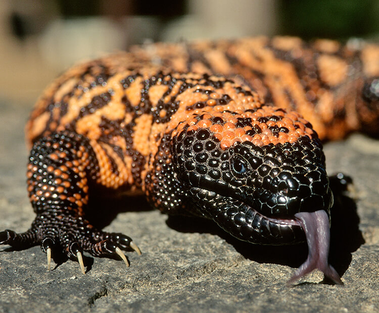
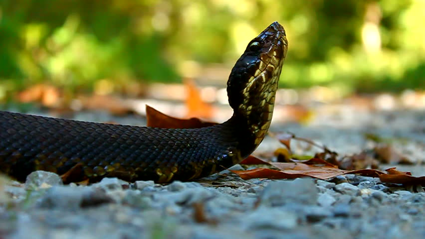
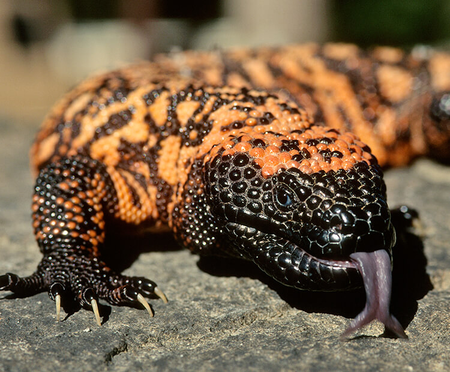
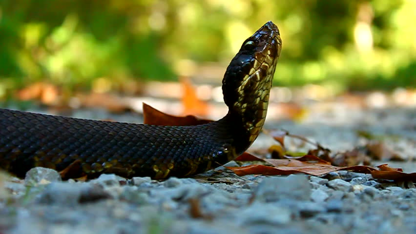

About
Reptile is the common name for one of the main groups of land vertebrates.
The name "reptile" comes from Latin and means "one who creeps". All living reptile species are cold blooded, have scaly skin, and lay cleidoic eggs.
They include crocodiles, snakes, lizards, turtles, and tor- toises. All regularly shed the outer layer of their skin. Their metabolism depends on the temperature of their environment.
Unlike birds and mammals, reptiles do not maintain a constant internal body temperature.
Without fur or feathers for insulation, they cannot stay warm on a cold day, and without sweat glands or the ability to pant, they cannot cool off on a hot one.
Instead, they move into the sun or into the shade as needed. During cooler parts of the year they become inactive. Because of their slow metabolism and heat-seeking behavior, reptiles are cold-blooded.
Reptile reproduction also depends on temperature. Only boas and pythons give birth to live young. The other species lay their eggs in a simple nest, and leave. The young hatch days to months later. The soil temperature is critical during this time: It determines how many hatchlings will be male or female. Young reptiles can glide, walk, and swim within hours of birth.
Reptiles first appear in the fossil record 315 million years ago and were the dominant animals during the Mesozoic era, which lasted for 270 million years until the extinction of the dinosaurs.
Popular Reptiles


 


